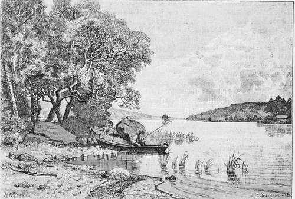

The Pickerel. Continued
Description
This section is from the book "American Game Fishes", by W. A. Perry. Also available from Amazon: American Game Fishes: Their Habits, Habitat, and Peculiarities; How, When, and Where to Angle for Them.
The Pickerel. Continued
I was out on the bank in a second, and ready for the second charge-in rebuttal. I cracked him one over the head, and then began a picnic!
I was cold and shivering when I came out of that mill-stream, but in a few minutes my clothes were steaming from the .violence of my exertion. He had ram'd me once, and tried many times to again butt me into the river. I could swim like a duck, but was opposed to being driven into the water like a musk-rat. Both of us were tired out, and my only hope of victory was in hanging on the horns of the brute-and getting in whacks, when I could, on his head and sides.
I let go and lifted my club; but he turned tail, and ran. I loosed my fish line and fortunately the Pickerel was still there. I took him in, rod and line, but the butt was a total wreck. Taking my two fish I made my way to the house, where mother, meeting me at the door, with wondering eyes exclaimed-"You'll be drowned vet!"
"The Last Throw."
No wonder! nose bleeding, hands torn and scratched, pants split into ribbons-but I had my fish, and kept a close mouth. The ram was a valuable animal, of choice breed, and I knew that in case he died there was a choice licking in store for me. "Silence is golden," sometimes, and I kept mum. For years my old enemy and I understood each other thoroughly.
Rams seldom die, unless killed. I could always thereafter fish that stream again unmolested; but let me go out of the pasture gate without a stick, and the ram was rampant.
How Can I Catch Pickerel?
With anything-a walking-stick, and a string with a spoon-hook on it-or with a long stick cut beside the stream, a tow line as large as your little finger, and a big hook impaling a mouse, a frog, a piece of fat pork; a slice of bacon, with the outer skin left on and cut about two inches long, shaping the bait like a minnow. The Pickerel is a fool fish when hungry, and I am inclined to think will jump at even bare hooks, if only they spin. But there is as much concentrated essence of fun in fishing for Pickerel, with fine tackles, as you can get out of the mailed warrior, boasting the grand lineage of a Microptcrus Dolomicu; and the former fish completely puts in shade the StizostctJiium vitreum, for fighting to the last gasp.
With a Bethabara wood rod, whose tips would slip into a barley straw, a fine Trout line, a rubber click-reel, and a single Sproat or Sneck-bend hook, impaling a Storer's minnow, or silver shiner through the back, I have hooked and landed Pickerel, after fighting them for several minutes. No Trout ever gave more fun than Pickerel will, when they do take a notion to rise to a fly. Large gaudy flies, allowed to sink beneath the surface, are attractive lure for any of the reticulatus family.
Where cold, clear streams abound, the Pickerel give an amount of pleasure equal to that obtained in angling for the Pike. The savage seizing of a minnow bait; the rush, for fifty or sixty feet; the strike, and the sharp struggle that ensues, all engage an angler's attention, and give him a most delightful occupation for the time.
My own system of fishing for the Pickerel is similar to that of Pike-fishing-laying out as long a line as possible, gathering the line in the hand in the same manner, covering all of one hundred feet with the line, and fishing up-stream. While fishing in waters peculiarly the home of the Pickerel, I have anchored a boat, cast out a line fifty or sixty feet, kept the bait off the bottom, and moving all the time; and could have filled the boat with fish if I had been so disposed.
While fishing in a Minnesota Lake one summer evening, at the mouth of a small but quick-running stream, I found a school of Trout-Pickerel-common in this lake, and a handsome, clean fish.
I was fishing for Wall-eyed-Pike at the time-a fish often caught in this lake, weighing five to eight pounds-and used a pair of Bass flies, the "Oriole" and "Black-and-Gold".
At the first cast I made the fish came to the surface by the half dozen. I saw they were "Banded and spotted," but could not for the moment place them. I knew they were not Wall-eyes, but could not for the moment determine what they were.
My second cast was made, and away went my fish. In a few moments I saw that I had hooked a second fish, and they began pulling two ways at once. Though not large fish, I had all I could do to save my rod. Gradually bringing them to the boat, I found one hooked safely and the fly outside of its mouth; the other was hooked just above its tail-foul-hooked, but I managed to save both. For an hour I had all the fun I wanted, and could have caught fifty Pickerel during the time, all with big Bass flies. I could not eat so many; there was no one near to give them to; so we moved away from the stream, found a bank where the Wall-eyes were feeding, and put in the balance of the evening, until nearly ten o'clock, fishing for these with flies and grasshoppers.
Fishing in Douglass County, Minnesota, during June, 1888, I found a stream running into a lake, and some boys having "dead loads of fun," as they expressed it, fishing for Bass and Pickerel. I secured a boat, pulled out from shore until I found the channel-bank, a shelving ledge, that dropped from about four feet deep down to about twelve feet; dropped my anchor in the four feet of water, and then run out until I could fish in the deeper part. I had minnows for bait, but wanted to try for Bass with flies, as they took the bait gamily and seemed inclined to rise for it. Putting on a Cheney and Black-and-Gold, I cast out a few times and found the spot where Pickerel were lying. I hooked two fish and played them carefully. When getting them to the boat I found a Pickerel and a Wall-eye on the hooks. I spent an hour at that spot, and caught thirty pounds of fish, distributing them amongst the boys who were fishing on the bridge crossing the stream and who had not caught anything. Then lifting my anchor I drifted out into deeper water, but the Pickerel seemed to follow me, for at every cast a Pickerel rose to my flies. I would skitter the flies along the surface of the water, when flip! swish! would come several fish at the same time.
I had to pull up my anchor and get!-the only time in a life-time when Pickerel were too many for me. But what was the use of catching them? the hotels were full of fish: the farmers caught all they wanted; even the boys cried "enough!"
Shortly before pulling up anchor I hooked, on a dark brown fly, a Pickerel weighing about one and a half pounds. While fighting him, my gut leader somehow caught another fish; it pulled and tugged, squirmed and twisted, until I expected to lose flies and leader, but by handling them gently I brought them to the boat, when I found the leader had caught into the gill and the dropper had twisted around the gill. I dropped the unhooked fish into the water again, and pulled for my hotel, having been surfeited, for once in my life, with Pickerel-fishing.
By W. David Tomlin.
Continue to:
- prev: The Pickerel
- Table of Contents
- next: The White Perch